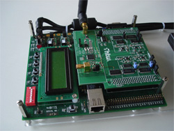
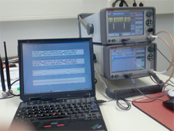

Running Infrastructure- and Researchprojects
BMBF MIMO - PSSS
Modern radio technology in buildings
Standards in radio technology like Bluetooth or WLAN are most common techniques in households and industry. Countless technical devices (for example telephones, headsets, video displays, ...) use modern radio systems to transmit data wireless.
The spectrum of potential uses is very big so it is conceivable that radio technology and wireless sensor-/actor networks will be stronger supported in fields like:
- automation of buildings
- industrial supervision and controlling functions
- medicine and geriatric monitoring
- entertainment electronics
- safety engineering
- transmitting of data of electronic domestic supply meters
Together with partners in industry the FHTW developed the transmitting method Parallel Sequence Spread Spectrum (PSSS) over short distances as part of a BMBF project. Since 2005 the transmitting method PSSS is part of the international standard IEEE 802.15.4.
The bullet points of current developments at the FHTW are solving problems of interferences in transmitting, transmitting of higher data rates and multipath propagation.
Prototype of a transceiver module consisting of a FPGA-experimental board and a high-frequency part developed in the FHTW
Developments at the FHTW
Modern semi-conductor technology, digital design methods and new theories in transmitting data effort a progression in digitalisation of receiving technology. Further that it provides the spread of cheap and flexible radio technologies.
The main focus of development at the FHTW are MIMO (multiple antenna systems - multiple input multiple output) and channel equalisation for radio technology for short distances in buildings (encouraged by BMBF-AIF) as physical layer.
To reduce the costs for hardware and reduce the absorption of energy the FHTW develops transceiving elements for single carrier systems.
Therefore digital senders and receivers with digital synchronisation in FPGAs (Field Programmable Logic Array) and methods of model-based-design are implemented.
Attended to that there is a reseach for:
- syncronisation methods for layers, symbols and data packages
- modulation and spreading methods
- sensornets
- multisystem applivcations
- room multiplex

Measuring station with programmable sender and receiver - all interesting radio methods can be implemented
Bit error rate for MIMO-PSSS with channel equalisation at a maximum dispersion of 5 symbols
 download the complete article [ca. 1.8 Mb]
download the complete article [ca. 1.8 Mb]